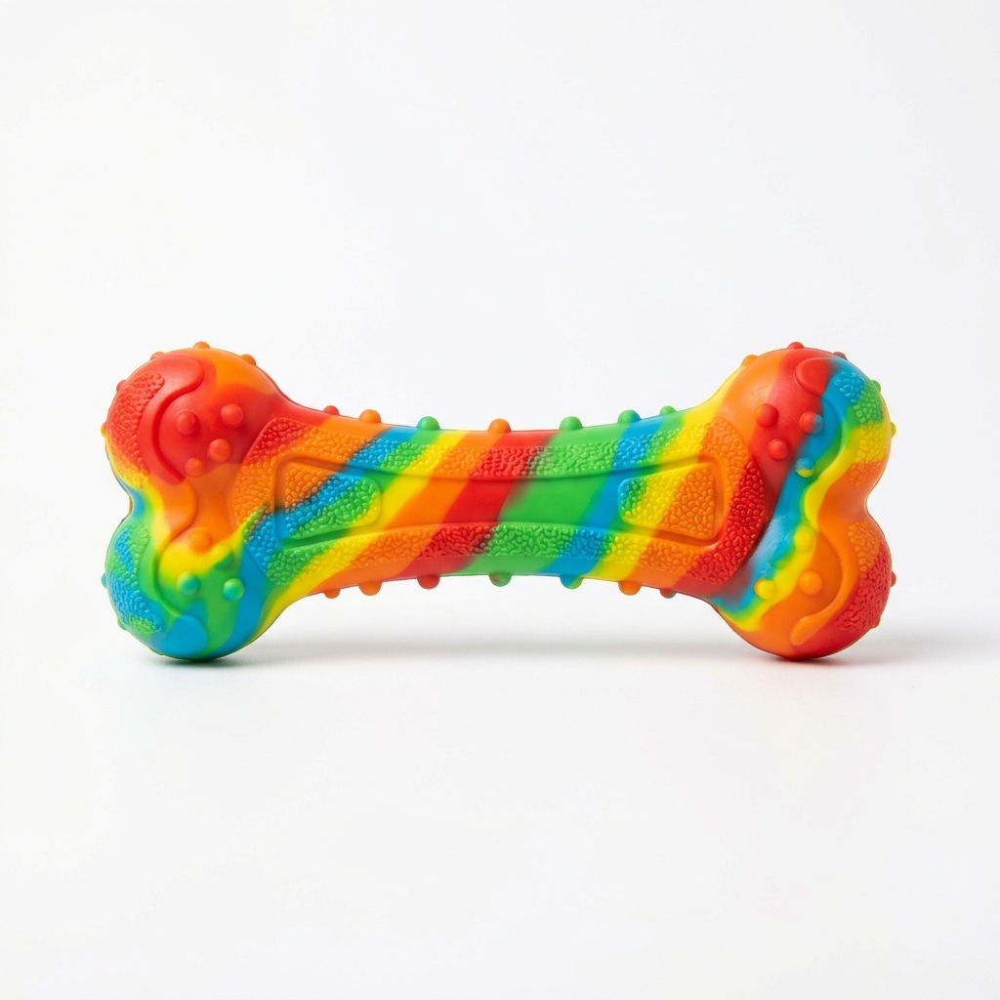
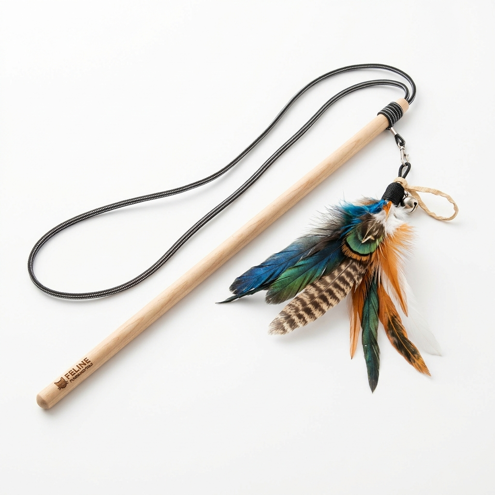

Brinquedos são essenciais para o desenvolvimento físico e mental do seu pet. Confira nossa seleção especial!
Osso de Borracha Resistente para Cães

Osso de Borracha Resistente - PetAmigo Fun
Descrição: Osso de borracha natural não tóxica, ideal para cães que adoram morder e mastigar.
Auxilia na higiene dental, reduzindo o tártaro e mantendo os dentes limpos. Muito resistente, suporta a mordida
de cães de médio e grande porte. Disponível em tamanhos P, M e G.
Material: Borracha natural não tóxica
Indicado para: Cães de todas as idades e portes
Cor: Laranja
Tamanhos disponíveis: P, M e G
Valor: R$ 34,90
Vara com Penas para Gatos

Vara com Penas Interativa - PetAmigo Fun
Descrição: Vara interativa com penas coloridas que estimula o instinto caçador dos gatos.
Proporciona exercício físico, reduz o estresse e fortalece o vínculo entre tutor e felino. Haste de madeira
resistente com linha de nylon e penas naturais e sintéticas coloridas. Ótima opção de entretenimento para
gatos de interior.